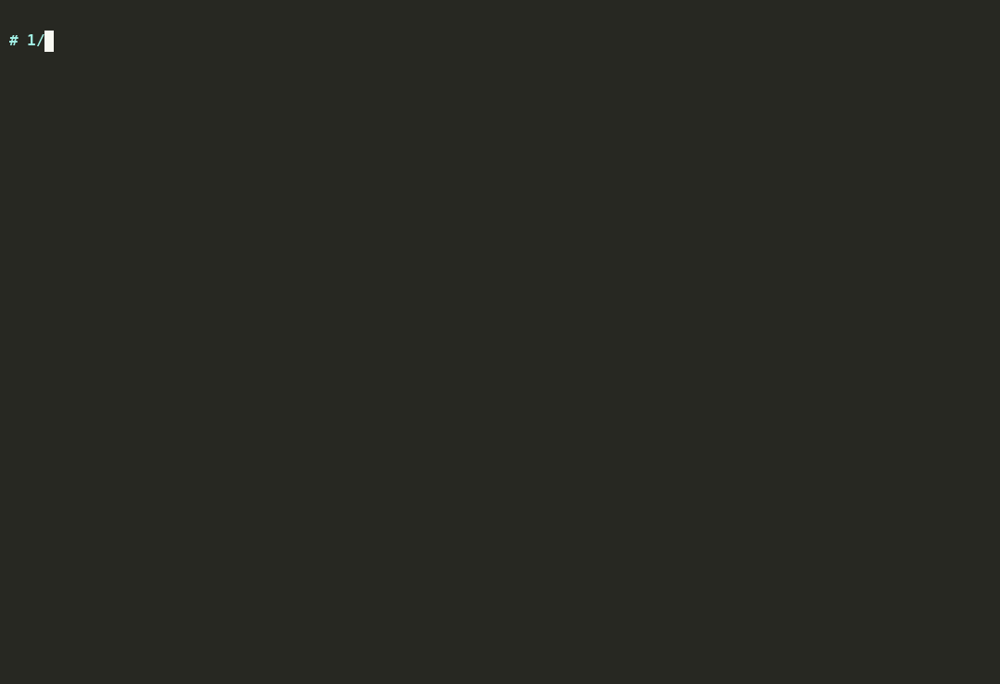

Private memory for your AI agents, running on your own servers in 48 hours.
Your agents remember decisions, preferences and project facts across sessions, and the memory never sits in someone else's SaaS. I deploy and support the open-source Metronix Memory server for teams that use Claude, Cursor or their own agents.
Email me to book a 20-minute call
What your team has after 48 hours
- A running memory server on your machine or VPC: PostgreSQL, Qdrant, Neo4j and Redis in Docker, with embeddings computed by a local model.
- A personal API key for each agent or person, so every agent's memory is separated and access can be revoked one key at a time.
- Claude Desktop, Cursor, VS Code and Hermes connected, with the config files committed to your repo or handed to each user.
- Proof it works: an end-to-end test that stores a fact, restarts the server and recalls the same fact, run on your hardware.
- Health and readiness endpoints wired into your monitoring, so a failed migration or a missing model shows up as an alert.
- Nightly backups of all data volumes, with one restore tested before handover.
- A short runbook: start, stop, upgrade, rotate keys, restore from backup. Plus a 60-minute handover call.
How it works
- 30-minute scoping call. We agree on the host, which clients and agents to connect, and how your team signs in. You give me SSH or a screen-share to a Linux server with Docker (8 GB RAM, 4 CPUs, 50 GB disk).
- Deployment. I install and harden the stack, issue the keys, connect your clients and run the end-to-end test. The 48 hours start when I have access to that server.
- Handover. You get the runbook, the configs and a recorded walkthrough. From here you run it yourself or keep me on support.
Pricing
| Service | What it covers | Price |
|---|---|---|
| Deployment | Everything in "What your team has after 48 hours". Fixed scope, fixed price. | $4,000 fixed |
| Support | Upgrades to new releases, a monthly health check, key rotation, help with new clients and agents, and a reply within one business day if something breaks. Cancel any month. | $900 / month |
| Memory tuning (optional) | Import your existing docs and notes, tune retrieval on your own questions, and measure recall before and after. | $3,000 |
What stays on your servers
Everything the memory layer stores or computes:
- Every memory record: facts, preferences, pinned instructions.
- Embeddings and the search index, produced by a local model. No embedding API is called.
- The knowledge graph and anything imported from your documents.
- API keys, users, audit and access logs, backups.
The memory server sends no data to me or to the open-source project. Your AI client is a separate matter. Claude Desktop, Cursor and similar tools send their prompts to their own model provider, and that includes any memories they recall. If nothing may leave your network, connect an agent that runs on a local model; then nothing does.
FAQ
Where does our data live?
On the server you choose: on-premises, or in your own cloud account and region. I work inside your environment and keep no copy. If you need a specific region for residency rules, pick the host there and the data stays there.
Which clients are supported?
Claude Desktop, Cursor, VS Code and Hermes are connected during deployment. Anything else that speaks MCP over HTTP works the same way, and there are REST and Python, JavaScript and Go SDKs for your own agents.
What happens after the 48 hours?
You own the deployment. You can run it yourselves with the runbook, or keep me on support for $900 a month for upgrades, monitoring checks and help when something breaks. Without support, nothing stops working. The software is open source, so there is no license fee and no lock-in to me.
Are you the Metronix project?
No. I am an independent implementation partner. Metronix Memory is open-source software under the Apache-2.0 license, maintained by its own authors at github.com/mtrnix/metronix-memory.
What do you need from us to start?
A Linux server with Docker (8 GB RAM, 4 CPUs, 50 GB disk), access for the deployment window, and a list of the people and agents that should get keys.